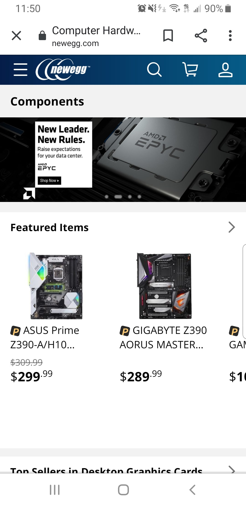
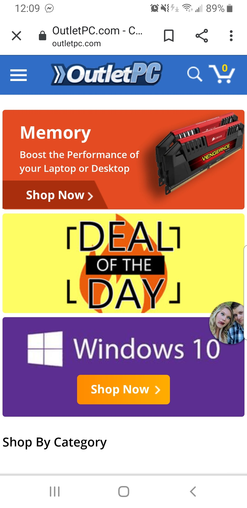

Design Principals
Tyler A. Lazenby
Design Principals
Hick's Law
Company Name: Newegg
URL: https://www.newegg.com/Components/Store/ID-1
Explanation: This site shows only a few categories that they have found to be the most used. The top navigation is hidden but easily accessible so that decision making is easily switched to the product selection. This increases conversion on the site by shifting the focus away from decisions to move around the site. It also helps the user feel like they only have to choose a product rather than keep trying to find the right location in the site.
Snapshot:
Rule of Thirds
Company Name: Outlet PC
URL: https://www.outletpc.com/
Explanation: This site shows graphics that specifically showcase the rule of thirds, especially the red banner showcasing memory. Even though it simply looks like it right and left aligned you should note that the text on the left isn't spanning the entire space between copy and image. This was a deliberate decision to make sure that they followed the rule of thirds.
Snapshot:
PARC: Alignment
Company Name: Nvidia
URL: https://www.nvidia.com/en-in/geforce/
Explanation: This site is shows what could be called by most web designers a "splash page". The concept here is that the eye is drawn to contrastingly aligned elements. Other factors here play a part in making sure this works but the idea is that although the alignment of the most noticeable items is asymmetrical, that allows the user to quickly see the most important parts of the web page.
Snapshot: